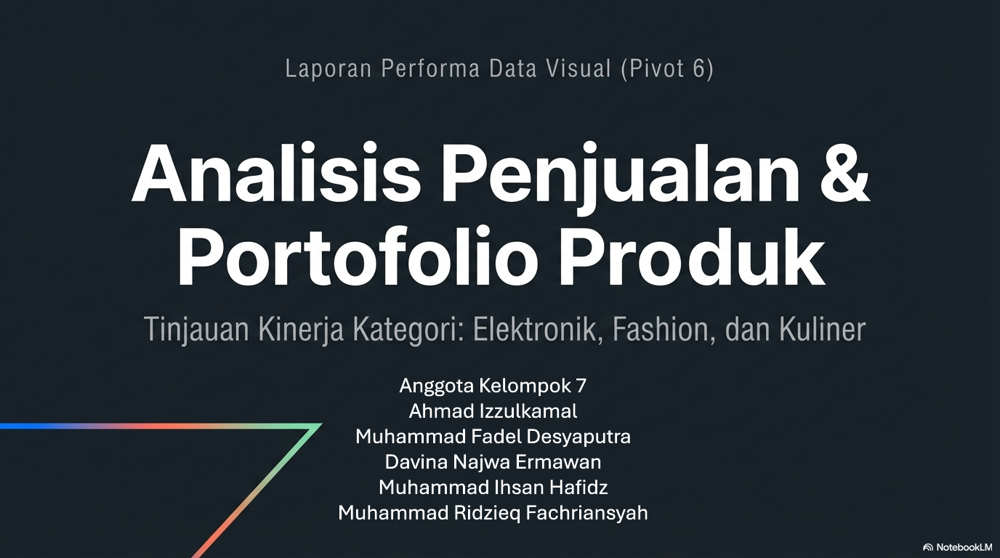

Tahapan Pengolahan Data & Visualisasi
Data Mentah
Data mentah: duplikat, penamaan tidak konsisten, salah ketik, dan nilai kosong.
| No | ID Transaksi | Kota | Kategori | Produk | Penjualan (Rp) | Masalah |
|---|
Daftar Data Utama
100 Data yang digunakan untuk membuat Visualisasi.
| No | ID Transaksi | Kota | Kategori | Produk | Nilai Penjualan |
|---|
Filter Kota
Filter Kategori
Pivot Tabel Wilayah
Agregasi per Kota
Pendapatan per Wilayah
Pivot Tabel Kategori
Agregasi per Kategori
Pangsa Pasar per Sektor
Pivot Tabel Kota x Kategori
Interaksi antara Wilayah Geografis dan Kategori Produk.
Pendapatan Bertumpuk per Wilayah × Sektor
Proporsi Penjualan
Analisis persentase penjualan per kota dan kategori.
Proporsi per Kota
Proporsi per Kategori
Penjualan per Kategori & Produk
Detail penjualan produk tersegmentasi per kategori dengan 10 produk teratas.
10 Produk Teratas Berdasarkan Penjualan

Executive Sales Performance
Presentasi Teori & Analisis
1 / 7